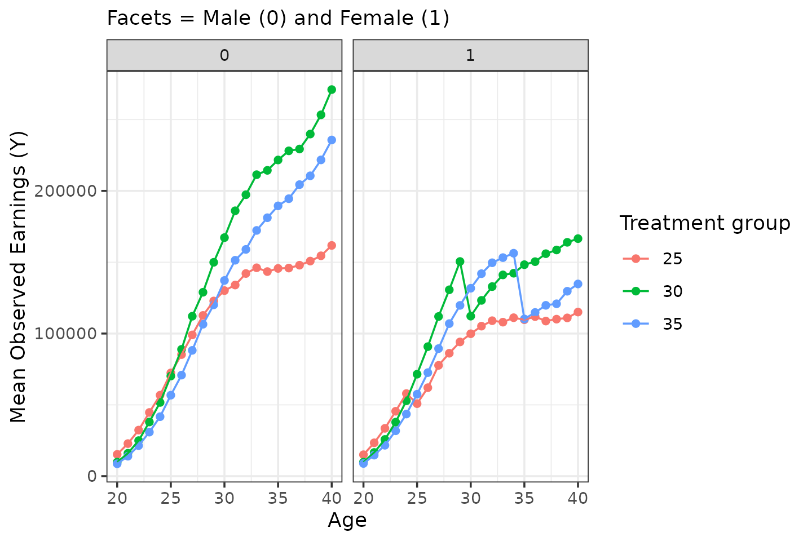
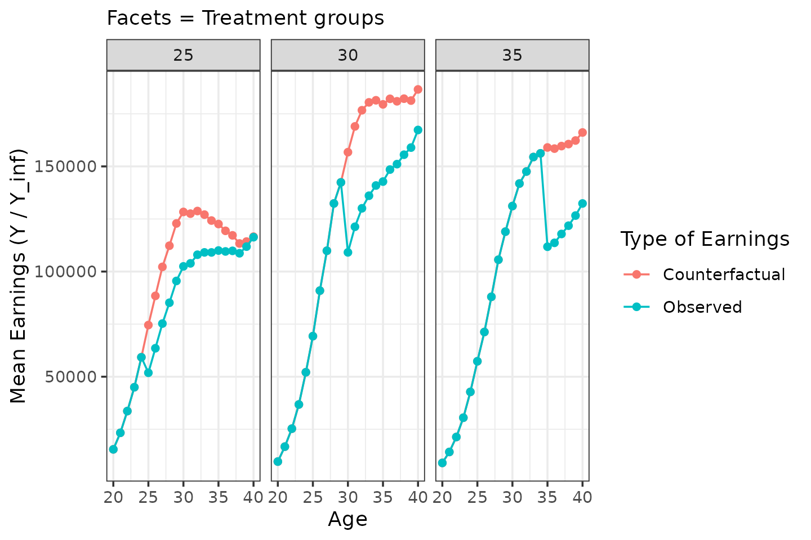
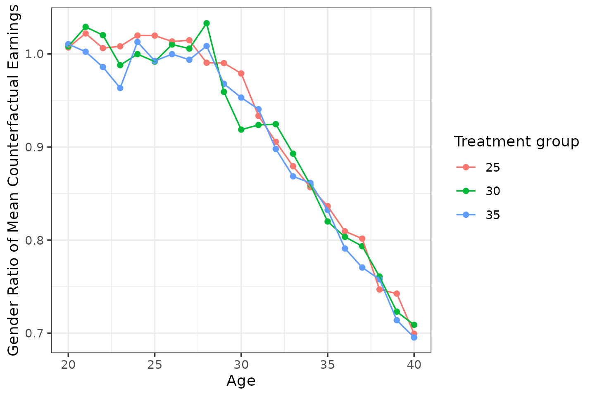

Simulating Data with childpen
The childpen package includes a simulation engine
designed to reproduce stylized patterns from the child-penalty
literature—diverging earnings paths for women and men after the arrival
of a first child.
This vignette shows how to generate data, and some stylistic facts on the DGP.
Basic usage
Draw data using the simulate_data function.
library(childpen)
N <- 100000
sim_data <- simulate_data(n_individuals = N)
sim_data |> tibble()
#> # A tibble: 2,100,000 × 6
#> id female age D Y_inf Y
#> <int> <int> <int> <int> <dbl> <dbl>
#> 1 1 1 20 37 12181. 12181.
#> 2 1 1 21 37 15585. 15585.
#> 3 1 1 22 37 129489. 129489.
#> 4 1 1 23 37 74298. 74298.
#> 5 1 1 24 37 113396. 113396.
#> 6 1 1 25 37 101516. 101516.
#> 7 1 1 26 37 100317. 100317.
#> 8 1 1 27 37 428608. 428608.
#> 9 1 1 28 37 526744. 526744.
#> 10 1 1 29 37 210384. 210384.
#> # ℹ 2,099,990 more rowsThe id column is the individual id. female
is binary indicator, = 1 indicates females and = 0 indicates males.
age indicates the age at which the earnings are observed.
D is the treatment variable — age at first childbirth.
Y_inf represents
,
that is the potential earnings under never having a child.
Y represents observed earnings, equal to potential earnings
under having a child at
.
How as the DGP generated
The DGP is supposed to serve as a realistic DGP for simulations studies of child penalty applications.
The goal is to construct life-cycle earning profiles for the potential earnings under the observed treatment and under the counterfactual treatment of never having a child. The problem is that identifying these life-cycle patterns for counterfactual earnings is diffcult. So the DGP does some simplifying assumptions, to construct a process which creates life-cycle earnings, which are motivated by the empirical data.
- Using Israeli administrative data, mean earnings for triplets (gender, treatment group, age) were estimated.
- Mens mean earnings were fit with cubic polynomials.
- Assume that men have zero treatment effect. Assign mean counterfactual earnings for men using means of observed outcomes.
- Assume that womens’ mean counterfactual earnings, within treatment group, are equal to men up to age 27. Starting from age 28, inequality in counterfactual earnings increases by 0.025 per year.
- Assume that the average treatment effect for women is a 30% drop at the time of treatment, and that women recover at a rate of 2% per year.
Example moments
Below I produce some graphs to construct intuition on the DGP behind the simulation.
First, for simplicity, treatment distribution is uniform, and treatment groups include 25-40.
sim_data |>
filter(age == D, female == 1) |>
count(D)
#> D n
#> 1 25 3111
#> 2 26 3055
#> 3 27 3142
#> 4 28 3040
#> 5 29 3158
#> 6 30 3194
#> 7 31 3102
#> 8 32 3082
#> 9 33 3205
#> 10 34 3171
#> 11 35 3050
#> 12 36 3124
#> 13 37 3186
#> 14 38 3115
#> 15 39 3213
#> 16 40 3052Second, treatment groups generally behave as:
- Early treated (e.g., 25) - low selection (low ability / low human capital)
- Mid treated (e.g. 30) - highest selection
- Late treated (e.g. 35) - mid selection
sim_data |>
filter(D %in% c(25, 30, 35)) |>
group_by(female, D, age) |>
summarize(Y = mean(Y)) |>
ggplot(aes(x = age, y = Y, color = factor(D))) +
geom_point() + geom_line() +
facet_wrap(facets = vars(female)) +
labs(x = "Age", y = "Mean Observed Earnings (Y)", color = "Treatment group", subtitle = "Facets = Male (0) and Female (1)")
For men, zero treatment effect by construct. For women:
sim_data |>
filter(female == 1,
D %in% c(25, 30, 35)) |>
group_by(female, D, age) |>
summarize(Y = mean(Y), Y_inf = mean(Y_inf)) |>
ggplot(aes(x = age)) +
geom_point(aes(y = Y_inf, color = "Counterfactual")) + geom_line(aes(y = Y_inf, color = "Counterfactual")) +
geom_point(aes(y = Y, color = "Observed")) + geom_line(aes(y = Y, color = "Observed")) +
facet_wrap(facets = vars(D)) +
labs(x = "Age", y = "Mean Earnings (Y / Y_inf)", color = "Type of Earnings", subtitle = "Facets = Treatment groups")
By construction, counterfactual gender inequality kicks in from age 28.
sim_data |>
filter(D %in% c(25, 30, 35)) |>
group_by(female, D, age) |>
summarize(Y_inf = mean(Y_inf)) |>
pivot_wider(names_from = female, values_from = Y_inf, names_glue = "Y_inf_{female}") |>
mutate(rho = Y_inf_1 / Y_inf_0) |>
ggplot(aes(x = age, y = rho, color = factor(D))) +
geom_point() + geom_line() +
labs(x = "Age", y = "Gender Ratio of Mean Counterfactual Earnings", color = "Treatment group")